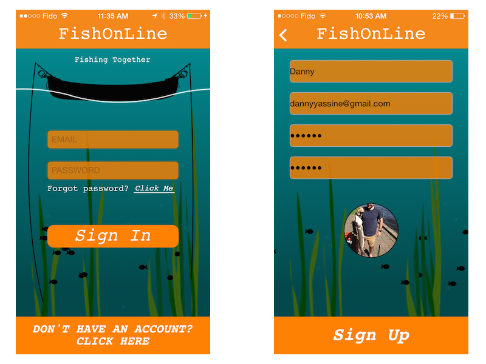
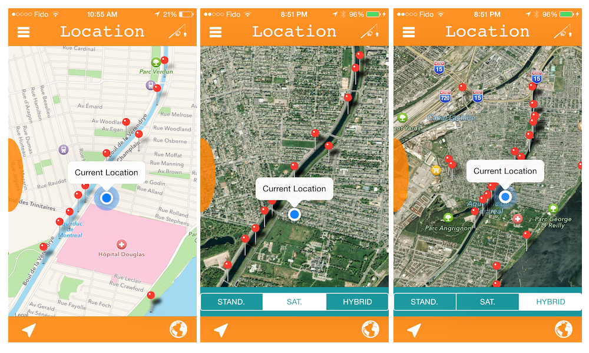

- 
A simple log in and sign up View Controllers with a background animation of fish swimming between the seaweeds.
- 
This is the main view of the application where the user can see all fishing locations posted by him and by his friends. The left button in the tool bar relocates the current position and the right button allows to change the map style. Clicking the right bar button in the navigation bar opens the view controllers below.

The two view controllers to view activity on your community. The locations are sorted either by date or by distance to your current location. By clicking a cell from either table, you will be relocated to that exact position on the map view.

Simply holding your finger on the screen to allow you to enter a new fishing spot! Add a photo to prove your catch and add useful information or recommendations to tell your friends if ever they choose to come to the same spot.

After posting your catch, you can tap that location to view a preview. To see extra information, simply press the button to display a new view controller to read information about that catch.

Show off your catches from your profile, available to your friends to see! Clicking on a photo will pop up the detail view to see what information is associated with that fishing location.

The table view is a more detailed view with direct information about the location, the date and the main title of that fishing spot.

By clicking the right bar button in the navigation bar, you will have access of changing you profile picture, ordering your pictures and able to delete your existing locations.

Finally, you can add friends to your FishOnLine community! Search for their name and your friend will be notified via Push Notifications. When your new friend has accepted your request, you will also be notified. Clicking on your friends, you will have access to view their profile and compare your catches!

Structure of the application via the Storyboard. The left side constitute of the Log In/Sign Up and the right side is the application once logged in.
-
Go back to top.